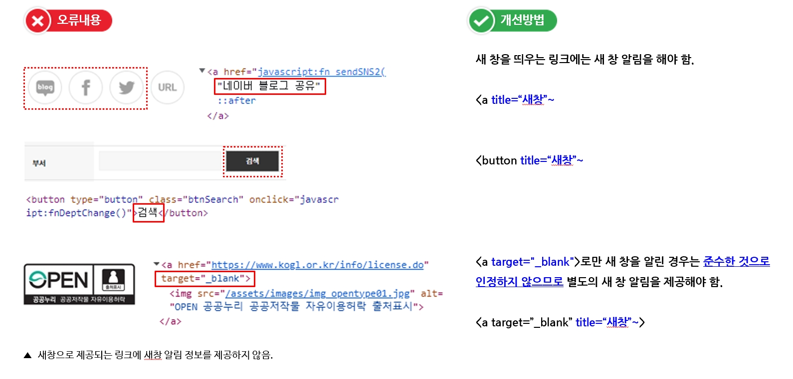
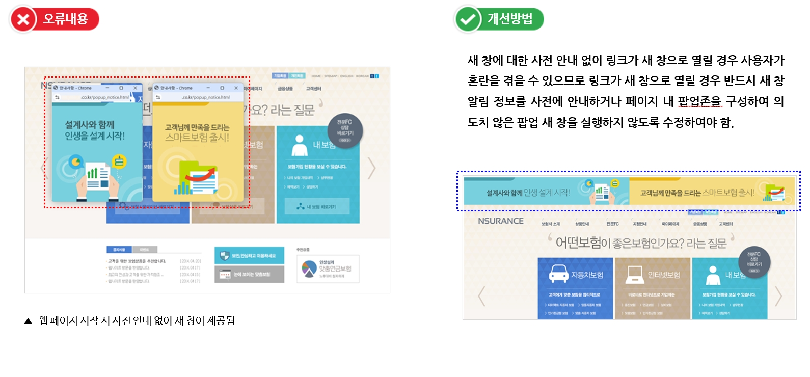
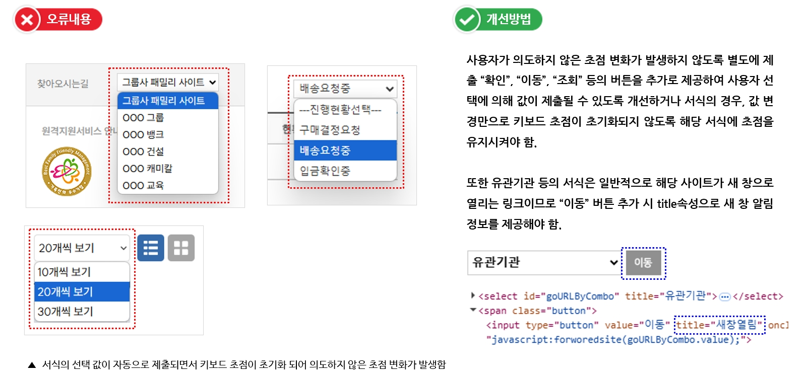
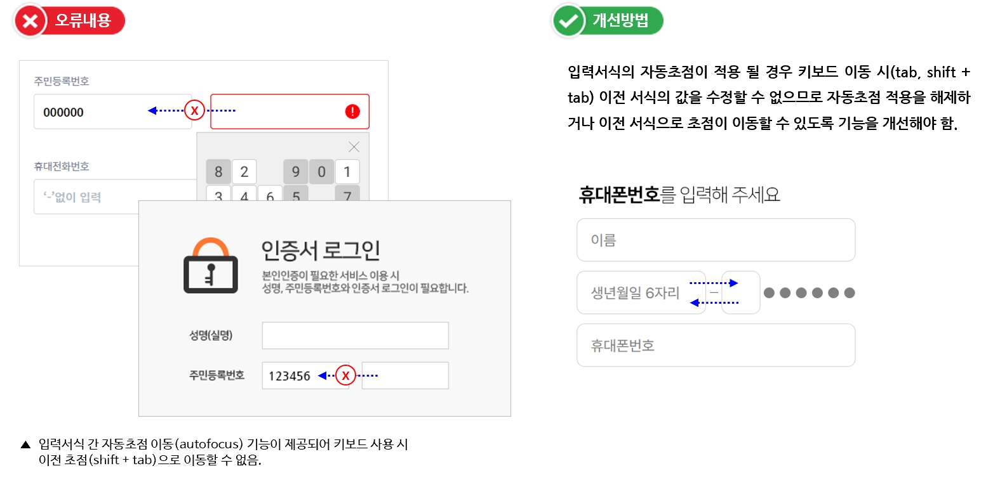
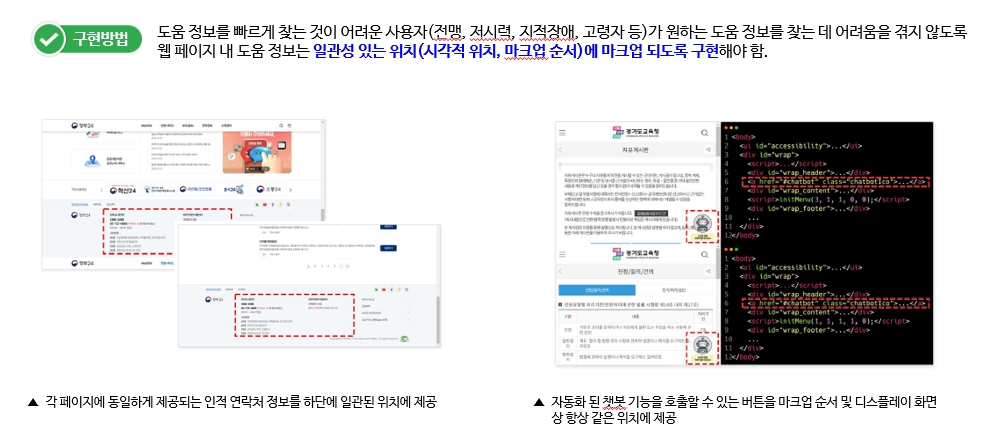

3.2 예측 가능성
웹페이지의 기능이 예측 가능하도록 구현해야 합니다.
사용자 요구에 따른 실행, 찾기 쉬운 도움 정보 등 사용자가 의도하지 않은 동작이 발생하지 않도록 합니다.
3.2.1. 사용자 요구에 따른 실행
사용자가 의도하지 않은 기능(새 창, 초점에 의한 맥락 변화 등)은 실행되지 않아야 한다.
• 사용자가 실행하지 않은 상황에서 예측하지 않은 새 창이 열리는 경우
• 웹 페이지 시작 시, 새 창 또는 화면을 가리는 레이어 팝업을 제공하는 경우
 • 사용자가 의도하지 않은 초점 변화나 기능이 발생되어 맥락상 불편을 주는 경우
• 입력 서식의 값을 변경하는 것만으로 다른 페이지로 이동하거나 현재 페이지의 의미가 완전히 바뀌는 경우
 3.2.2. 찾기 쉬운 도움 정보
도움 정보가 제공되는 경우, 각 페이지에서 동일한 상대적인 순서로 접근할 수 있어야 한다.
• 각 웹페이지에서 다음과 같은 사용자 도움 정보를 서로 다른 위치에 제공한 경우
